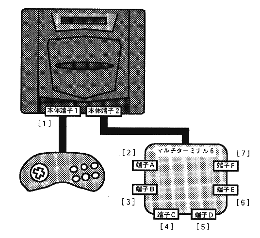
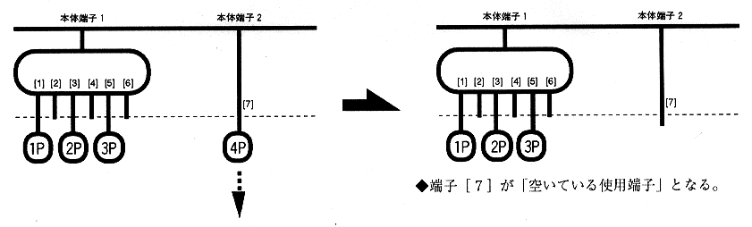
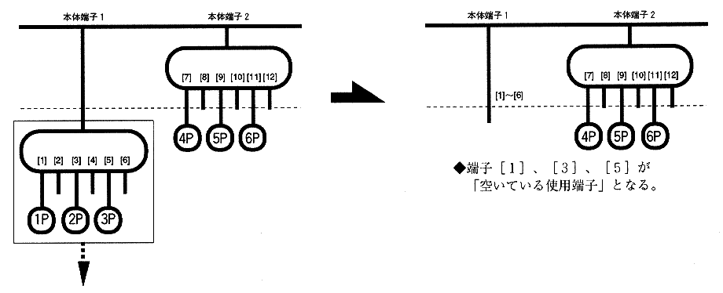
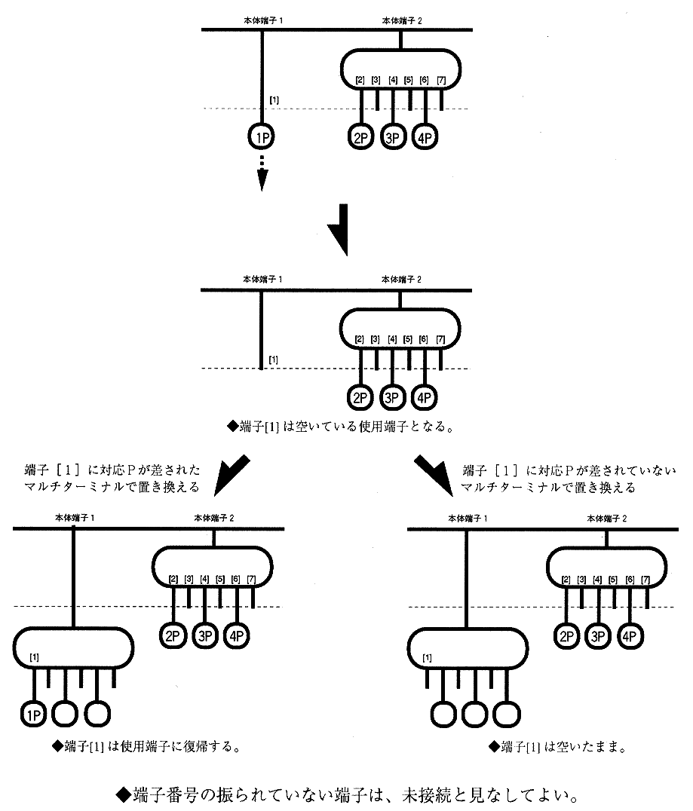

Return to previous page | Return to menu | Go to next page
All software for Sega Saturn must work without problems on multi-terminals, regardless of the number of players supported .
* Connecting a multi-terminal to a multi-terminal terminal is considered unconnected in terms of hardware and does not need to be supported .
Since the number of terminals and the number of players that can be played increase when connecting to multiple terminals, the following principles that extend 〈Principles for setting supported peripherals〉 must be observed.
| ・ If a P or multi-terminal is not connected to terminal 1, do not start the game. ・ When a multi-terminal is connected to the main terminal 1, if the corresponding P is not connected to any terminal of the multi-terminal, the game must not be started. ・ When playing with multiple players, it must operate normally regardless of whether the main terminal 1 or the main terminal 2 is connected to the multi-terminal. (Refer to the connection example on the next page) / Assigning operation numbers always gives priority to the lower numbered terminal (left terminal) according to the connection status of the multi-terminal, and the operation number must not be reversed. |
* Reversal of operation number means that operation numbers should be assigned in ascending order from the lowest terminal number, but this is not the case.
* As long as the operation number is not reversed, the terminals used do not necessarily have to be continuous. (There may be a space between terminals used )

.* This connection example (2) is not encouraged. In principle, connection example (1).
 .
.
 .
.
Check input peripherals when using multi-terminal. As a general rule, where there is no description, comply with “1. Basic items” .
《Recommended Specifications》
| (a) Check before starting |
◆ Check for compatible P (valid terminal registration)
| (b) Check at start |
◆ Start application
* In multiplayer games where participation is possible, it may be possible to start from other than 1P.
◆ Determining the terminal used
(I) From the valid terminals, Select the terminals to be used left-justified in order of increasing terminal number .
(Ii) Select the terminals to be used in order from the smallest terminal number among the valid terminals (assign operation numbers). / I>.
* In the case of rule (ii), an operation number may be assigned to an unused terminal.
* When applying rule (ii), the specifications must be such that operation numbers are not confused. (The player who participated at the moment the start button was pressed is displayed on the screen, and the reaction of the input is displayed on the screen.)
| (c) Check in main game |
◆ Check for insertion / removal
(i) When removed



(ii) When connected
* In both cases, wait for release when paused.
* Even if a non-used use P is returned, if it is a corresponding P, input is resumed.

(iii) When replaced
[Replaced with few terminals] (multi-terminal → one peripheral)
→ Consider that it is the youngest terminal among the terminals before replacement
(See figure Separate volume 2-9, Separate volume 2-10)
[When replaced with many terminals] (one peripheral → multi-terminal) → Only the youngest terminal among the replaced terminals is valid (See Figure 2-10)


(iii) When added
In an application that uses multi-terminal and has [Participation in the middle], there is a possibility that the operation number will be reversed if it is additionally inserted.
* The multi-terminal setting principle allows that there is a vacancy between the terminals used, and also allows additional insertion during the main game when there is a [participation]. Therefore, if the connection is additionally made to a vacant terminal, the operation number may be reversed.
In this case, the operation number is prevented from being reversed by the following rule.
* Most multi-terminal users are premised on the assumption that they are using a left-justified connection as specified in the instruction manual.
(2. Multi-terminal 6, finished)